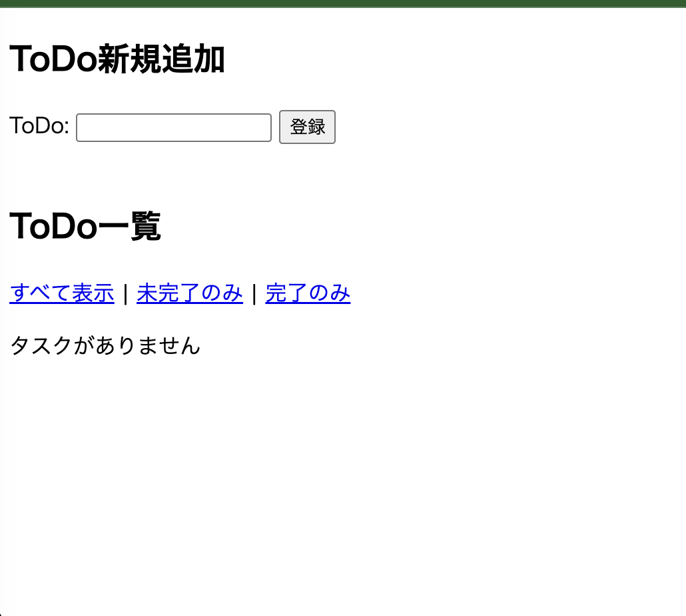
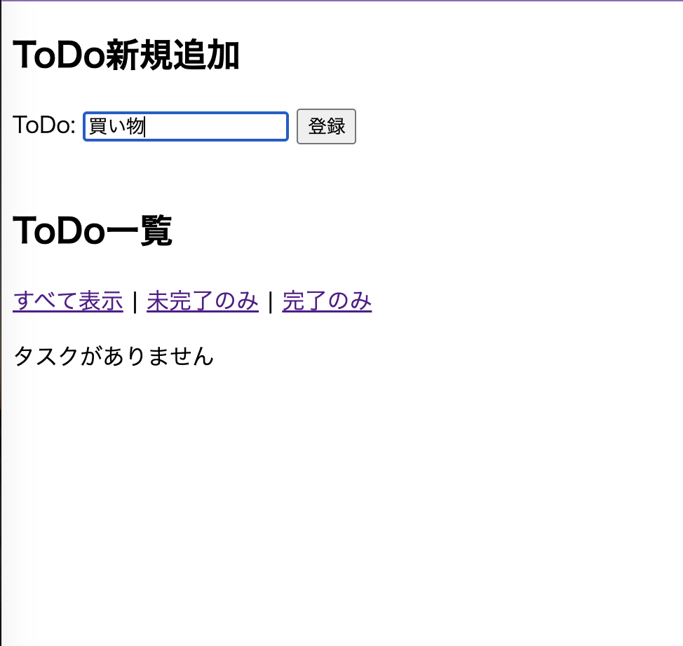
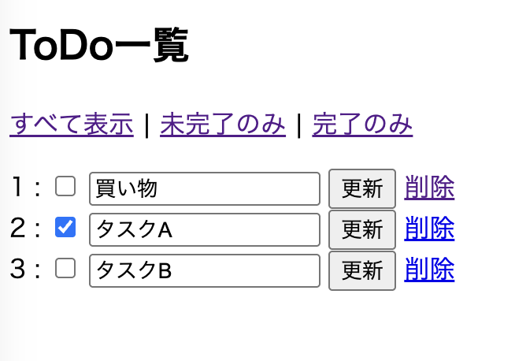
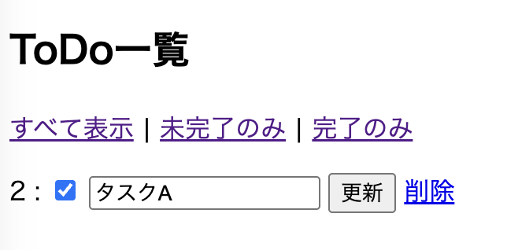
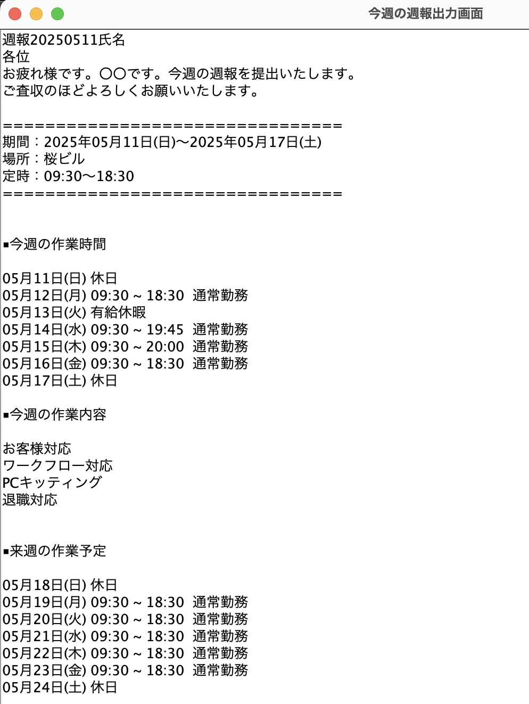

SpringBootTodo
Todoの確認ができるWebアプリケーション
アプリについて
言語：Java
開発環境：INtelliJ IDEA CE
フレームワーク：SpringBoot
制作期間：1週間
Githubリンクwebの画面全体

機能
タスク作成
タスクを作成できます

タスク一覧表示
タスクを一覧表示しています
デフォルトは全て表示ですが、完了のみ・未完了のみへ表示切替えができます
タスク更新
タスク内容の更新や完了ステータスへの変更を行うことができます
タスク削除
タスクの削除ができます
制作の経緯
- 制作理由 -
フレームワークSpringBootを使用したwebアプリケーションのチュートリアルとして、
TodoアプリをQiita記事を参考に作成しました。
- 制作の流れ -
MySQLの接続やThymeleafによるHTML形式でのフロント実装・CRUD処理を実装しました。
その後タスクの完了機能を追加しました。
- 工夫した点 -
参考にさせていただいたキータの記事を参照して作成しつつ、エラーが出た点は自力で修正しました。
タスクの完了機能を追加し、実用的なアプリケーションを目指しました。
感想
SpringBootによって開発の幅が広がることを実感しました。
参考記事はありますが、生じたエラーを自分で調べて解決したり機能追加を行ったことで思い入れのあるアプリケーションになりました。